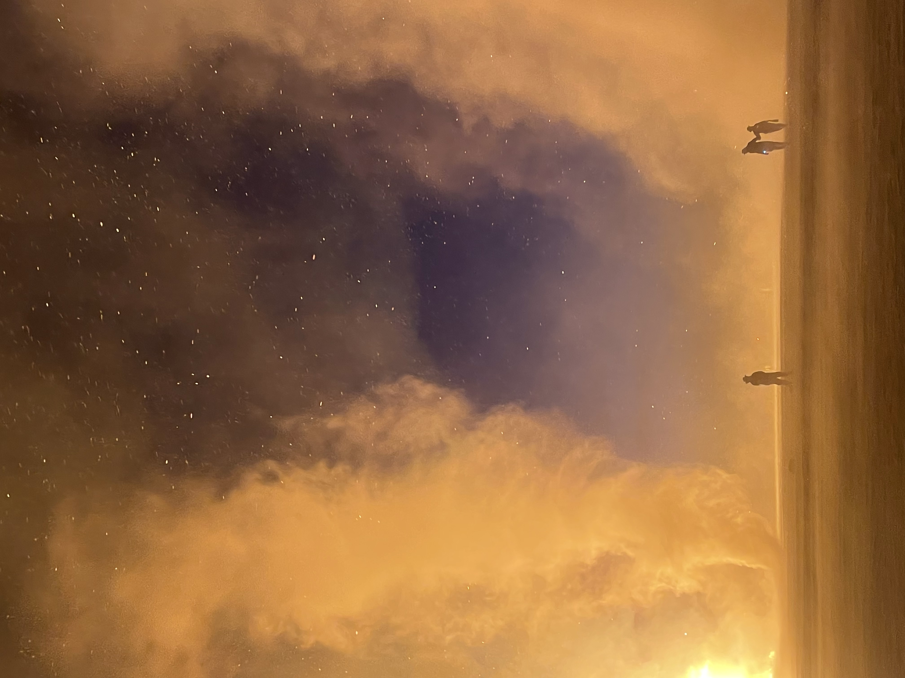

Day 3：荒漠诗人
拂晓，昭示着大漠人类不可辩驳的宿命：当太阳露出地平线时，你我皆已是诗人。
彼时将有史诗般的音乐从远处响起，标志着集体灵魂又一次完成系统性升级。
我早上5:20便起床要出门看日出。出门时5:46，天边已有微光，刚刚好能看清路。我骑去中心广场，边骑边想应该在哪个艺术品或建筑旁找机位。
当时想着，若选不出，那就去神庙。一路上看到有趣的艺术品就停下来拍照，它们都映着曙光。
日出和日落天边的霞光其实很相像，唯一的差别是观赏时的心境：日落期待万物平息，日出期待万物朝阳。
我最终没有驻足于任何一件艺术品或建筑旁。我就在这些points of interest之间穿梭着耗尽了拂晓的全部时间。太阳挤破地平线的一刻我认为是神圣的。
如果从“这一刻每日都发生一次”的角度，便不觉它神圣。但若思考一下我多长时间能亲眼见证一次这一时刻，它便陡然神圣了起来。我听到远处有人在为这一刻欢呼。
想必日出在很多人的生命里都不是常客。
再说说令我印象深的三件艺术品。第一件是一个组合件。随意插在地上的干枯枝丫围绕一个类似庙的圆拱轮廓。建筑骨架上挂着随风翻飞的白布和风铃。风铃的音色恰好就是我认为最典型的“大漠之音”。
外围插着一圈白旗，它们更为招展地，毫无节奏感地舒卷翻飞。我在一个长椅躺下，那把长椅一端刚好被一个木桩投下阴影。我瞬时开启了从另一视角观赏这一件作品，以及我周围的大漠之城。
我感到白布飘得更灵动了，似乎它们的动作不是风使然，而是出自自己的意愿。风的存在只是贴心地让我看到这些灵动的意愿罢了。
第二件是一个羊角围成的半圆形，正在播放着“来自古老的远方”的神秘乐。我走入中心站定，和羊头面对面，享受立体环绕声对我的洗涤。我一度闭上眼睛，音乐无孔不入地游进我的身体。
羊头，羊骨，音乐，这场面让我想到那些民间赐予人力量的祭祀仪式。我忽觉可笑。现代人一边嘲讽那些仪式的迷信与伪科学，一边做着同样的事，并将它门槛拉高
—— 你得先懂艺术才能跨越的门槛 —— 然后冠以之一个符合科技文明的名字：Sound bath。
第三件是我一秒get到寓意的。它是一个在攀登的人，双手向下弯曲拉长构成他在爬的梯子本身。我脑中立刻响起“Over the wall 🎵🎵”。
不过我认为最贴近这件雕塑的不是副歌这句，而是那句“It is the one, that you help build" —— 你在攀登你亲手筑起的高墙。
我感觉，这几年，不少时间我就是如此。Navigating through a free space is easy. But navigating with constraints is hard. Especially, many of those constraints are imposed by yourself.
我问营地的旅伴看到这件雕塑什么感想，她说她看到的是overstretching。这跟我的第一感觉如出一辙。我认为从悲观的角度解读确实如此，引发的回应也大抵是“大可不必”，“let it go”， “let it be”种种。
可我在写下这一段时又想到一个乐观的解读：如同小学趣味运动会常见的一个项目，用两块板子过河，脚踩一块，同时把后面那块挪到前面。所以，乐观的解读关键词便是自力更生。
在周围没有梯子的环境 —— 正如这人迹罕至的荒漠 —— 只能自己生长出梯子。渡己 —— 你每次生长出的梯子，都会成为自己的一部分，那是更牢固的自信，撑起更坚实的脚步。
我面向羊头闭上眼睛，将身体交给天地，让音乐浸润我的全部。片刻后我睁开双眼，世界像一幅游戏界面重新打开。羊头对我说：“恭喜你系统已升级至最新版本”。

Day 4：情愫与熵增
于是今天把昨天说的神圣的事又做了一次。今早直线骑去营地的最东端，那里有一个大眼睛形状的DJ舞台。背后是一望无垠的大漠。
我本想说“那里即是太阳升起的地方”，随后一想，NoNo，到处都是太阳升起的地方呀。今天看日出选在最东端，正好和昨天形成差别。
昨天我总选艺术品或建筑当近景，太阳甘居背景充当强大的气氛加浓器。
今日我与太阳之间无遮无拦，远处黑色的沙丘轮廓是寥寥简笔风格的背景，太阳是画布上唯一跳动的因子。
其实从拂晓出门，一路的骑行我就已经十分享受了。因为大家默契地形成磁场线，从四面八方指向天光即将乍破的那一点。
我喜欢有使命感的生物，或许我找寻的“灵气”就源自使命感。拂晓的大漠令人神往之处就在于，那一短暂的区间，大量个体的使命感凝聚于一处了。
营地最东端拉了一条橘色警戒线。所有人一字横向排开，显得极为乖巧有序。收敛于一处的使命让大家都温顺了。
我在想如果没有那条警戒线会怎样。人烟于荒原的分割会无比模糊。人群会稀释开，每个人往前看或许都有更往东走一些的人，于是每个人的视野里都有日出和那些比自己“野心”更多一点的人。
那样的景象想必也很有立体感吧！前有古人，后有来者。
看日出的“后调”是日出后一小时内拍艺术品背靠朝阳的盛容。因为这时太阳还很低，可以和取景框里的前景一般高，辐射出满画的金色。
我自作主张地将雕塑也想像成有朝圣东方的使命，这样它们就本应出现在我的取景框之中，与天和地在“灵气”上达成统一。
日出后回程是背靠太阳骑的。每骑一段回头看，金光万丈与消融在金光中的神庙之轮廓让我的视网膜惊颤。我总是会收获一股新鲜的惊喜，这惊喜是日出汇集的使命如涟漪般四散时引发的回甘。
如果莫奈去沙漠画日出印象，我想他至少要画一套三幅才完整。既要有前摇，也要有后调。莫奈最爱的光影，一定会在这三幅中形成鲜明对比。或许画家与常人不同的视角会让他把日出切分成粒度更细的片段。
这样想来，日出本是一个时刻，现在却可以根据不同人的创造力拥有或狭长或紧凑的横轴。啊我好喜欢日出与日落。它们可以代表瞬息万变，也可以代表一如平常，可以代表轴心不变的循环往复，也可以代表永不减速，永不掉头地向前滚动。
我忽然知道为何“流浪地球”这个创意蕴藏着这么多震撼了。自转与公转，原本毫无诗意的物理学概念，被人类的联想赋予了太多内涵。人类先活着，才创造了这些内涵，却又要无比依赖这些内涵，才能继续活下去。或许一个文明，之所以在一个连续时空中能形成一个连续闭合的区域，是因为后人的心脏，是前人创造并安装给我们的。
这让后人的生活更安稳，同时也带来限制。能带来安稳的事物，同时也带来对不安的恐慌。能带来使命，希望，变化与进步的事物，同时也带来对漫无目的，无望，恒常与停滞的厌恶。这么想来，宇宙确实是熵增的。
这些抽象情愫，向来成对出现。想要回到乌有是不可能了。于是一个文明只得带着越来越多的情愫 —— 和这些情愫的阴影 —— 向前滚动。
Day 5：降低背景的饱和
今早6:30起床，犹豫了一下还是出门“早锻炼”了。出门时有些漫无目的。起初只是隐约想着去那个吹笛子的人那里看眼万花筒，然后也许蹦个早迪，最后从火人骑往9:00那边骑，看眼10:00入口附近昨天点灯终点见到的一片还蛮有趣的营帐。
事实上一进Playa路线就彻底放飞了。不过我这次骑蛮远，东边的“边境”和西边的“边境”都触及了。有人用自行车拖着拖车露宿边境。他们同数百万粒沙子一样是不用刻意就能享受到日出的。
有几个没有会面过的Art，是让我瞬间get到寓意的。其中一个是行走的鱼：彩色鱼形铁片插成一丛，方向各异，但每条鱼似乎都带着痛苦Mask，正应了那一句“像一条鱼行走在陆地，要学着呼吸，热闹孤单双栖，忍着痛往前行”。
另一个也是群像：一群插在地上的麦克风。我立即哼起：“想唱就唱，要唱的响亮。。。”有趣的是，我刚刚才意识到看艺术品，尤其是摆在开放空间的大件，我也喜欢看群像。不仅是因为在摄影构图上容易出层次，还因为群像可以将时间和空间占得更饱满。
自从去过一次Outer Playa，我就几乎每次都往最外围跑，人头攒动的Inner Playa蹦迪场只是我每次出行的前摇。直到进行决定返回，才会再一次扎进人群。每次我都在“人群 -> 人群让步于荒漠 -> 还是人群给我衣食保障”这样的更迭中无比享受每轮更迭给我的refreshing feel。
驱使我走向“边境”的，我已分不清是对人群的排斥还是“frontier”本身对我的吸引。也许都有吧，哈哈。是的，我又联想到了我为什么适合科研。
我每在一个地方休息就很愿意原地躺下。因为躺下后看到的空间排布会剧烈变化。平时被忽略的无聊物体，瞬间开始充满创意。昨晚我躺在边境看星星，扭头一看，我倒在地上的自行车就极美。绑在车把上的彩灯将光辉施舍给一小片沙土。背后大面积的漆黑夜空，将黑石城人类创造的灯火挤压成细细的丝线紧贴在地面上。
今早骑行的尾声是躺在Disco Lips的秋千沙发上休息。我在视野里留出了一席给DJ周围律动的群众。在歪斜的地平线上，大家的舞姿变得更不受重力束缚了。盗梦空间里一个被评价为很有创意的镜头是大都市鳞次栉比的高楼忽然迎面倒来，平行于地面，道路开始向天空延伸，仿佛有人从另一头掀起了地毯。这种空间排布的变幻的灵感，如果一个人躺倒观察世界便能得到。
那么第一个躺下的人应该怎么也想不到，自己无端的举动，抽之精髓并将其放大便是艺术。谁第一个躺下开创了这一先河呢？我不知不觉成为了这一流派的追随者。
来火人节前我在想，为什么地理位置专门选到沙漠？生存难度抛开不谈，景色也单调啊。如果是草原，湖边什么的，岂不是更宜人。现在我至少想出了一条肯定沙漠这个选择的理由：人们想要尽可能极简的背景，空白的起点，尚未存在的先验，尽可能大的留白。这样，更细微的“拥有”才更有可能被看见，被赋予价值。写到这里，我忽然想打趣地为尘土抱一句不平：即便在火人节，它也没有得到被真正看见并珍视的机会。
Day 6：撤销式的消亡
没能见证这座城的搭建，但有幸见证这座城的拆除。一座城的消亡方式，从远古时代的被自然灾害掩埋，到刀耕火种时代的被人为遗弃，再到近代的被战火吞噬，带给我的皆是唏嘘甚至畏惧。
想到城市消亡，我脑海中浮现的总归是一幅不太友好的“断面”画像。黑石城的消亡却引发实实在在友好的感受。我认为是闭合，是完结，是赠予与归还被优雅地端平，是指针十分强迫症友好地从11:59一跃回零点。
更重要的是，黑石城从物质层面的消亡预示着它这数日里创造的财富100%完成从物质到精神层面的转化。
恢复大漠原本的面貌是出于尊重和本分，因为我们不做以惊扰他人为代价的创作。但我们的确创作了许多，以雁过无痕的方式。
Playa上的建筑大部分已被拆除，尽显空旷，使得每个骑自行车的人都多了几分漫无目的。但我认为今天依旧出来逛的人是更具艺术性的，因为他们懂得给自己此行的创作书写尾声。
今天我看到的周遭，就有如一个搭建的模拟器环境被工程师连续不停地猛按撤销键。
空气中没有告别戏码常见的惜别与感伤，也毫无挽留之意。反而，按原次序一一撤回这一过程本身就再次产生着欣喜。
我在想我是否可以把这一逻辑运用在什么其他场合，这样我就可以避开一些告别时的伤心，用欣喜替代之。我忽觉这是一个十分高级的心术。可是怎样的场合有着类似“告别 = 撤销”的风格呢？算了，太难想。先给这一思绪存一个ckpt，即：我以雁过无痕的方式创作，撤销式的告别是完成闭环的一个步骤。因此，告别应当带来欣喜，甚至是需要开香槟的那种欣喜。
存完这个ckpt，我好像，当即为这条思绪想开了一个小口：我讨厌冬天，甚至从秋天就开始焦虑，也许是因为我太想挽留：挽留阳光，挽留长日，挽留色彩。而自然却在做着撤销。我毫无意义的挽留给自己平添烦恼。或许，我应该在冬天多想想我在春夏秋的创作产物，或者想想冬天是使闭环完成（赠予与归还的闭环）的尾声。而这尾声有着重要的艺术性地位。
还有，规律性降低生活背景的饱和，有助于秩序和健康。
这样我忽然不厌恶冬天的干枯单调了。毕竟我正常生活中的冬天还是比沙漠层次丰富不少的。况且，平静极简的环境，还能促进我书写，而我一旦开始书写，就会产生新的reflection。这8天让我get到了书写的快乐，真是我的幸中之幸。
Day 7：仪式化地安放过往
从此我识人多了一个分类器：可能会去火人节的 vs. 不会去火人节的。
昨夜神庙被烧了，放大了数万人的感性。我听到有人哭泣，有人嚎叫。火光冲天，压倒性的红热将每一处感官所能接收的信息带宽撑满。
我没有个人的感伤情绪，但我坐在这个无需刻意收敛感性的场合极为自在。我想到现实生活中我虽然万般宠爱自己地给自己营造这种情感大开大合流畅收放的场域，但我始终需要用大量独处来保护这个场域。
我喜欢独处的本质原因是出于对这个场域的珍爱和害怕失去。我不禁为此感到一点委屈。为何维系这种场域如此费力？为何它就不能天然存在？
与此同时我也在欣慰我来了火人节。我在这要操太多平时无需操的心：水，电，风沙，食物。但若要说出我平时里操心现在却不操心的一项，那必定是对这个场域的照顾。它就像我牵挂的小孩。这几日难得可以将它撒进野性的环境而不担心它的安危。
朋友说昨晚烧完火人，每辆花车上又在再续狂欢。我问今晚是不是依旧如此，得到了否定。因为烧火人的主题是狂欢，烧神庙的主题是沉重与哀伤。我觉得这个解释非常合理。可看神庙烧到一半时我心中产生了一个质疑。如果说烧神庙的主流思想是哀，那一定有人，那些所谓“与主流格格不入”的人，在此刻感到狂喜。
无论出于什么原因感到狂喜，这种情绪存在即可合理。那么是否可以说这一类minority没有得到足够的包容？想到这里我十分希望这个逻辑被反驳，否则我岂不是给火人节是大价值观之一的radical inclusion找到了一个破绽？
因此我默想，即便今夜全场的氛围都凝重又哀伤，也一定至少有一台花车，一台音响，让狂喜者找到归属。
将过往的沉痛遗忘是不可能的。烧神庙启发我想到了替代思路：不用遗忘，而是将过往有仪式感地安放。书写在神庙木头上，并看着漫天飞屑卷入龙卷风中心是一种安放方式。另外的选择或许还有将它沉入湖底，埋进森林湿润的土壤，装进漂流瓶放逐大海，等等。
被一段记忆haunt会不会是因为它不满意你为它安排的寝宫？你需要足够认真地为它修建秘密花园，让它在里面乐不思蜀。那些教你遗忘的劝导，大多是故作高深的说教。你不需要遗忘。你需要的是将记忆安放。
“将它安放”说来简单，实则是一项大工程。不过我喜欢设计这类工程。首先，让我沿用“一段记忆持续困扰你是因为它不满意你为它安排的寝宫”这个比喻。那么第一步，必然是identify一宫正主。Identify的过程最简单的方式便是将它写下来吧。为了避免因这一过程有可能带来“揭伤疤”之感从而引发抵触情绪，我认为无需追求重现某段记忆发生时刻的心境。
换言之，无需逆向穿越回过去而追求“入戏”。我只需按照书写时刻的心境与视角，去描述过去。描述的侧重当然会因书写时刻的心境而发生偏移，但我认为这不会影响identification的准确性。
第二步是为新的寝宫选址。先按照气质秉性大致分为水系和土系吧。其次按照“位分”决定安放的位置。如果位分很高，那么得是个什么national forest或national beach。中低位分就退而求其次选择state forest或state beach，再或regional preserve。
这个等级，主要是为了引发我仔细判定某段记忆的由来，起始时刻，及其困扰我的时长与强度，绝不是生搬硬套庸俗而绝对化的优劣评级。
第三步，当然是我绝对不会拒绝的：来一次带有神秘任务的旅行。这时候批判的声音响起了：这一切就是在为旅行找借口！呃，也许它有在无中生有积极的能量。因为，我也会被鼓舞着为了让一个已提上日程的旅行更有意义而多做一个思考去照顾一段未被安放好的记忆。
由此，我又想到一个奇妙法术让两件对我有益的事情相得益彰！我为此感到很有成就感。
我从负面事件中汲取能量的方式之一，是为它编织一个以它为主角的舞台。

